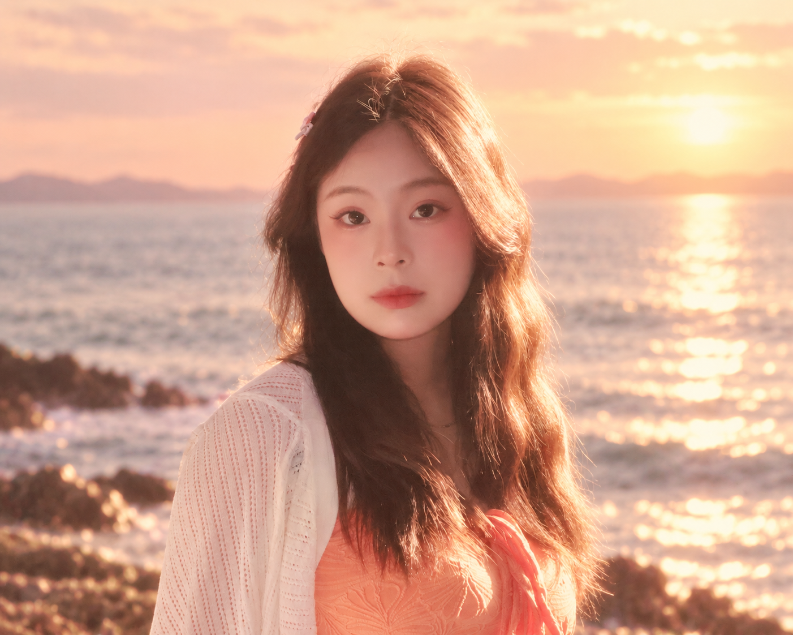

PRODUCT DESIGN · AI PRODUCT · USER RESEARCH
从问题出发， 把复杂变得更清楚。
聚焦用户研究、产品逻辑与体验设计，持续探索 AI 如何参与产品分析、设计与迭代。
浏览作品
Selected work
精选作品
03 个项目
产品设计与研究实践
 01
VIEW CASE
01
VIEW CASE
UX / PRODUCT DESIGN · 2026
PawCare
宠物就医决策与连续健康管理平台
从症状记录、医院比较到诊后护理，重构宠物主人的完整就医体验。
查看完整项目 02
VIEW CASE
02
VIEW CASE
INDUSTRIAL / PRODUCT DESIGN · 2026
FlowCase
一体化创作平板壳
围绕携带、输入与绘画之间的频繁切换，探索连续的平板创作体验。
查看完整项目 03
VIEW CASE
03
VIEW CASE
SUSTAINABLE PRODUCT DESIGN · 2026
LoopSpring
模块化水环境净化产品
通过材料循环与模块化结构，探索低成本、易维护的水环境改善方案。
查看完整项目
About me
从细节里，
从细节里，
找到更好的答案。

我是一个喜欢从细节里找问题的产品设计师。
从工业设计到产品设计，我持续观察人们如何使用、为什么犹豫，再把复杂需求整理成清晰逻辑，让体验更自然。
我也在探索 AI 如何参与产品分析、设计与迭代。比起只做“好看的方案”，我更在意它为什么存在，以及能否真正让事情简单一点。